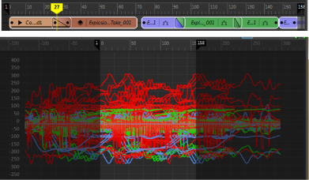
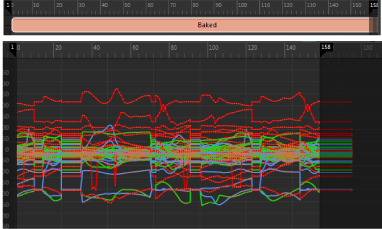
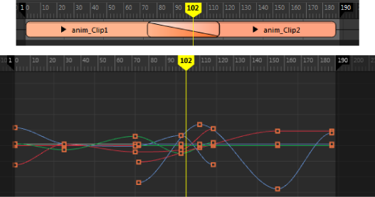
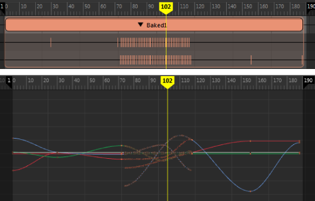

烘焙时间编辑器片段，可将现有动画合并为单个动画曲线。由于这种方式可以将创建的关键帧数保持得尽可能小，因此对片段或组片段执行复杂的编辑和分层之后非常有用。
下图显示了烘焙到片段之前时间编辑器和曲线图编辑器中的一系列动画片段。

下一幅图显示了在时间编辑器中进行烘焙之后的同一系列动画片段。请注意，由于已忽略重复的关键帧，因此曲线图编辑器中的动画曲线看起来显得更简洁。

合并片段
在对象上烘焙动画时，时间编辑器将重用现有曲线，除了某些情况下，无法在区域中使用原始曲线。在这些情况下，时间编辑器将对具有多条曲线影响同一属性的任何区域进行采样。
具有以下特点的片段将会发生采样：
- 已 crossfade
- 已插值（如果片段位于正在烘焙的组片段内的不同轨迹上）
- 已重定时（速度曲线和时间扭曲等应用于片段）
- 具有受非曲线驱动的属性，如表达式或约束
- 已设置动画权重
- 具有层
如果时间编辑器中某对象有两个动画片段已 crossfade，这会导致时间编辑器对动画曲线求值，以创建最终关键帧值。在以下示例中，时间编辑器和曲线图编辑器中显示了两个融合片段。

在下图中，这些片段已烘焙到一起。请注意如何组合片段重叠的关键帧。在此过程中，仅烘焙已 crossfade 区域中的动画曲线。仅在必要时添加已 crossfade 区域之外的关键帧。

若要烘焙时间编辑器片段，请执行以下操作：
在片段上单击鼠标右键，然后从时间编辑器“片段”(Clip)上下文菜单中选择“烘焙到场景”(Bake to Scene)或“烘焙到新片段”(Bake to New Clip)。您可以使用“烘焙到新场景并删除”(Bake to New Scene and Delete)和“烘焙到新片段并删除”(Bake to New Clip and Delete)移除选定文件的原始版本。